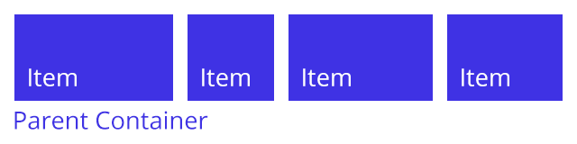

The Flexbox Cometh
Champion of the Layout
by Jeremy Wagner — @malchata
git this talk: github.com/malchata/flexbox-presentation
The Days of Old
Styling the Young Web
Seemed Great at The Time
(But in retrospect...)
Tables, Anyone?
With a side of spacer GIFs, perhaps?
Seemed Great at The Time
(But in retrospect...)

Then Along Came
CSS
What CSS Has Given Us
Separation between<markup>
and
.aspects-of {page: design;}
The ability to target devices by
@media and (physical characteristics)
Control over
page layout
Box Model
The Foundation of All Elements

Box Model
The Source of All Headaches

Box Model Headaches
Floating Two Columns
Box Model Headaches (Cont'd)
Equal Height List Items
Feeling Defeated?
Introducing
Flexbox
A master of layout and
flexibility for everyone.
The Layout Modes
-
block layout
for laying out documents. -
inline layout
for laying out text. -
table layout
for laying out tabular data. -
positioned layout
for laying out items outside of the structured flow.
A New Layout Mode:
Flex Layout
- Can be laid out in any direction.
- Can have their display orders reversed or rearranged.
- Can be laid out on a singular axis or wrapped onto multiple lines.
- Can flex sizes to respond to available space.
- Can be aligned with respect to the parent container or each other.
Sounds Great, But...
What's The Browser Support?
Turns Out...
Not Too Shabby!
WIN
Flexbox Mechanics
A Tale of Two Property Types:
Properties that apply to the parent container
Properties that apply to the container's child items
Starting With Flex Layout:
Just add display: flex; to a parent container.
Hint: Use a display type of inline-flex if the parent container needs to behave similar to an inline-block element.
Flex Layout Defaults
Items given a display type of flex do the following:
- Act like
blocklayout items by clearing items and expanding to the width of the parent container. - Do not allow their children to wrap.
- Align their children to the top left of the parent container.
- Arrange their children in rows.
- Appear in the order defined by the markup.
- Stretch to fit the height of the parent container.
Properties for
Parent Containers
Flex Direction
Use flex-direction
Valid values:
row | row-reverse | column
column-reverse
Wrapping Flex Items
Use flex-wrap to affect child item wrapping.
Valid values:
nowrap | wrap | wrap-reverse
Distributing Flex Items
Use justify-content to distribute child items.
Valid values:
flex-start | flex-end | center
space-between | space-around
Aligning Flex Items
Use align-items to align items on a horizontal axis.
Valid values:
stretch | flex-start | flex-end
center | baseline
Aligning Flex Items (Cont'd)
Use align-content to vertically distribute items.
(Only effective on certain scenarios.)
Valid values:
stretch | flex-start | flex-end
center | space-between | space-around
Properties for
Child Items
Aligning Individual Items
Use align-self to align individual items.
(May not work in some scenarios.)
Valid values:
stretch | flex-start | flex-end | center | baseline
Changing Item Order
Use order to rearrange elements in a flex container.
Valid values:
Any integer, including negative values.
Default: order: 0;
Establishing Default Item Size
Use flex-basis to set an item's default width.
(In flex column layouts, this sets an item's default height.)
Valid values:
Any valid CSS expression for width or height.
Growing Flex Items
Use flex-grow to proportionally size specific flex items.
Valid values:
Any positive integer value.
Controlling Shrinking of
Flex Items
Use flex-shrink to set a flex item's minimum threshold.
Practical
Applications
Easy Site Headers
justify-content makes perfectly organized navs a snap.
No floating, no clearing, no bull.
Equal Height Content Galleries
Scrollable Equal Height Galleries
Easy Proportional Tabs
Full Page Accordions*
*Uses viewport units, which may not have widespread support.
Cool Image Galleries
Beware!
Vendor Prefixes Ahead
Browsers In Need of Prefixing
- Internet Explorer 10 (Partial support with
-ms-prefixing.) - Safari 7–8 (Full support with
-webkit-prefixing.) - iOS Safari 7.1–8.3 (Full support with
-webkit-prefixing.) - Android Browser 4.1–4.3 (Partial support with
-webkit-prefixing.)
Inconsistent Vendor Prefixes
For display: flex;
- display: -webkit-flex;
- display: -moz-flex;
- display: -ms-flexbox;
- display: -ms-flex;
- display: flex;
LESS (or SASS) to the Rescue
Mixins for Your Sanity
From this gist:
gist.github.com/jayj/4012969
In Conclusion...
Resources
-
A Complete Gude to Flexbox:
css-tricks.com/snippets/css/a-guide-to-flexbox/ -
This talk on Github:
github.com/malchata/flexbox-presentation -
LESS Mixins:
gist.github.com/jayj/4012969 -
Flexbox Support Matrix:
caniuse.com/#search=flexbox -
JSBin (Used for fiddles):
github.com/jsbin/jsbin